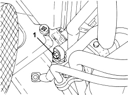
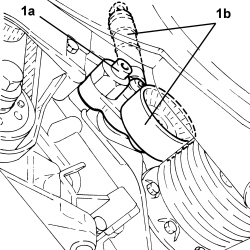
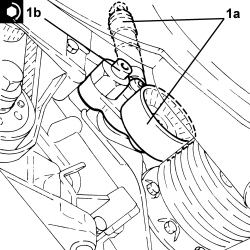
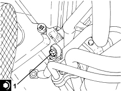

1092D20 AIR CONDITIONER COMPRESSOR BELT MOBILE TENSIONER - R R
- Path
- Procedures > 10 ENGINE > 1092 ENGINE COMPONENT MISCELLANEOUS DRIVES > 1092D AIR CONDITIONER COMPRESSOR DRIVE > 1092D20 AIR CONDITIONER COMPRESSOR BELT MOBILE TENSIONER - R R
- Kind
- repair procedure (removal / refitting; the operation number is the code)
- Applies to
- engines: 2.4 JTD 20v; all production periods
- Interactive page
- https://sloeber94.github.io/elrnDB-fCrm/en/#/194004005
Applies to: engines: 2.4 JTD 20v; all production periods
 Removing
Removing
 Refitting
Refitting- Position the vehicle on a lift.
Op. 5530B52 BATTERY SUPPORT/DRIP TRAY - R.R
Op. 7055B54 UNDER ENGINE PROTECTION/GUARD - R.R.
Op. 1008B30 GEARBOX SIDE SUPPORT FLEXIBLE MOUNTING(S) - REPLACE
Op. 1008A42 POWER UNIT RIGID SUPPORT - GEARBOX SIDE - R.R.
1. Unscrew the upper bolt securing the air conditioning compressor drive belt moving tensioner.

Applies to: engines: 2.4 JTD 20v; all production periods
Op. 4450B04 RIGHT FRONT WHEEL - R.R
Op. 7055B66 ENGINE COMPARTMENT DUST COVER IN RIGHT FRONT WHEEL ARCH - R.R.
Op. 7055B91 RIGHT FRONT WHEEL ARCH LINER - R.R.
Op. 1092D10 AIR CONDITIONER COMPRESSOR DRIVE BELT - R + R
Op. 1092A10 CRANKSHAFT PULLEY - R + R
1. Undo the lower bolt (1a) and remove the air conditioning compressor drive belt moving tensioner (1b).

Applies to: engines: 2.4 JTD 20v; all production periods
Refitting
Removing1. Position the air conditioning compressor drive belt moving tensioner (1a) in its housing and secure it tightening the lower bolt (1b) to the recommended torque.
Component | Fastening | dia | Value (daNm) | Validity |
|---|---|---|---|---|
Engine components single belt moving tensioner | Bolt | M10x1.5 | 5.0 | 1.8 1.9 JTD 16v 1.9 JTD 8v 2.4 JTD 20v |

Applies to: engines: 2.4 JTD 20v; all production periods
Op. 1092A10 CRANKSHAFT PULLEY - R + R
Op. 1092D10 AIR CONDITIONER COMPRESSOR DRIVE BELT - R + R
Op. 7055B91 RIGHT FRONT WHEEL ARCH LINER - R.R.
Op. 7055B66 ENGINE COMPARTMENT DUST COVER IN RIGHT FRONT WHEEL ARCH - R.R.
Op. 4450B04 RIGHT FRONT WHEEL - R.R
1. Tighten the upper bolt securing the air conditioning compressor drive belt moving tensioner to the recommended torque.
Component | Fastening | dia | Value (daNm) | Validity |
|---|---|---|---|---|
Engine components single belt moving tensioner | Bolt | M10x1.5 | 5.0 | 1.8 1.9 JTD 16v 1.9 JTD 8v 2.4 JTD 20v |

Applies to: engines: 2.4 JTD 20v; all production periods
Op. 1008A42 POWER UNIT RIGID SUPPORT - GEARBOX SIDE - R.R.
Op. 1008B30 GEARBOX SIDE SUPPORT FLEXIBLE MOUNTING(S) - REPLACE
Op. 7055B54 UNDER ENGINE PROTECTION/GUARD - R.R.
Op. 5530B52 BATTERY SUPPORT/DRIP TRAY - R.R
- Remove the vehicle from the lift.
Topics linked from this page (10)
- 1008A42 POWER UNIT RIGID SUPPORT - GEARBOX SIDE - R.R.
- 1008B30 GEARBOX SIDE SUPPORT FLEXIBLE MOUNTING(S) - REPLACE
- 1092A10 CRANKSHAFT PULLEY - R + R
- 1092D10 AIR CONDITIONER COMPRESSOR DRIVE BELT - R + R
- 4450B04 RIGHT FRONT WHEEL - R.R
- 5530B10 BATTERY - R+R
- 5530B52 BATTERY SUPPORT/DRIP TRAY - R.R
- 7055B54 UNDER ENGINE PROTECTION/GUARD - R.R.
- 7055B66 ENGINE COMPARTMENT DUST COVER IN RIGHT FRONT WHEEL ARCH - R.R.
- 7055B91 RIGHT FRONT WHEEL ARCH LINER - R.R.